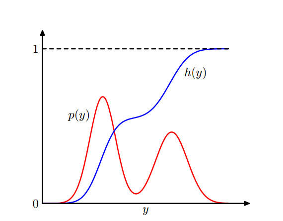
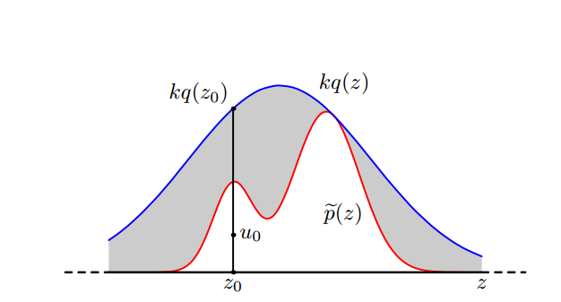
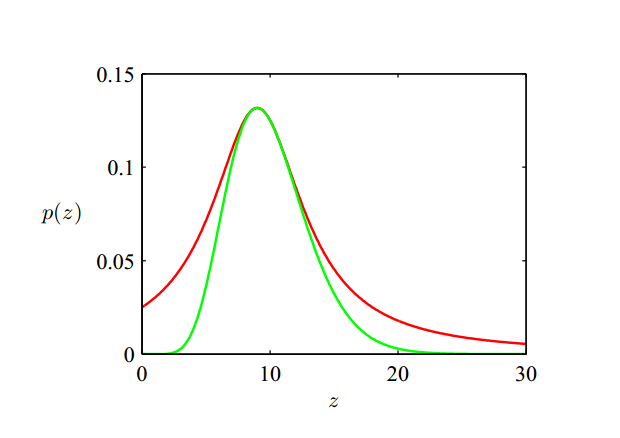
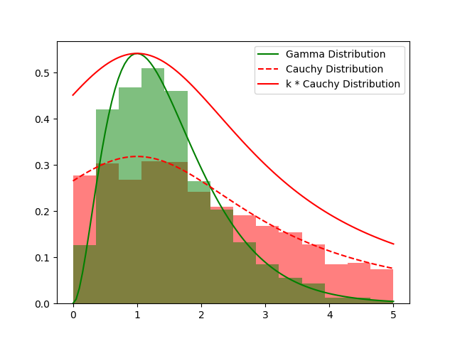

本节中将研究如何从一个给定的概率分布中生成随机样本。假定已经有一个算法，能够生成$(0, 1)$之间均匀分布的伪随机数。
11.1.1 标准概率分布
首先考虑有了一个均匀分布的随机数来源时，如何从简单的非均匀分布中生成随机数。假定$z$在$(0, 1)$上均匀分布，令$y = f(z)$，则
$$
p(y) = \frac{dh}{dy} = \frac{dh}{dz} \frac{dz}{dy} = p(z) \frac{dz}{dy}
$$
其中$h(\cdot)$是$p(\cdot)$的CDF，且$p(z) = 1$（$z$是$(0, 1)$上的均匀分布，每个点的概率密度都是1），因此
$$
p(y) = \frac{dz}{dy}
$$
对上式积分，得到
$$ \begin{aligned} z &= \int_{-\infty}^y \frac{dz}{dy} dy \\ &= \int_{-\infty}^y p(y) dy \\ &\equiv h(y) \end{aligned} $$因此$y = h^{-1}(z)$，$h$是$y$的概率分布的不定积分，如下图所示：

生成指数分布
指数分布的概率分布函数是
$$
p(y) = \lambda \exp{(-\lambda y)}, ,0 \le y < \infty
$$
此时
$$ \begin{aligned} h(y) &= \int_{-\infty}^y p(y) dy \\ &= \int_{0}^y \lambda \exp{(-\lambda y)} dy \\ &= 1 - \exp{(-\lambda y)} \end{aligned} $$令$z = h(y)$，得$h^{-1}(z) = -\frac{1}{\lambda} \ln{(1-z)}$，这样变换可以使得$y$服从指数分布。
生成柯西分布
柯西分布的概率分布函数是
$$
p(y) = \frac{1}{\pi} \frac{1}{1+y^2}
$$
此时
$$ \begin{aligned} h(y) &= \int_{-\infty}^y p(y) dy \\ &= \int_{-\infty}^y \frac{1}{\pi} \frac{1}{1+y^2} dy \\ &= \frac{1}{\pi} \arctan{(y)} + \frac{1}{2} \end{aligned} $$令$z = h(y)$，得$h^{-1}(z) = \tan{(\pi(z-\frac{1}{2}))}$。
多变量情形的推广：Box-Muller方法
多变量情形下，只需使用Jacobian行列式：
$$p\left(y_{1}, \ldots, y_{M}\right)=p\left(z_{1}, \ldots, z_{M}\right)\left|\frac{\partial\left(z_{1}, \ldots, z_{M}\right)}{\partial\left(y_{1}, \ldots, y_{M}\right)}\right|$$
下面介绍用于生成高斯分布的Box-Muller方法。（此部分参考了Box-Muller Transformation，因为我实在看不懂书上的写法）
假定$z_1, z_2$是$(0, 1)$上均匀分布的变量，则通过下列方法生成的$(y_1, y_2)$是两个相互独立的高斯分布变量：
$$ \begin{aligned} y_1 &= \sqrt{-2\ln{z_1}} \cos{(2\pi z_2)} \\ y_2 &= \sqrt{-2\ln{z_1}} \sin{(2\pi z_2)} \end{aligned} $$可将上式重写为
$$ \begin{aligned} z_1 &= \exp{\left(-\frac{y_1^2 + y_2^2}{2}\right)} \\ z_2 &= \frac{1}{2\pi} \arctan{\left(\frac{y_2}{y_1}\right)} \end{aligned} $$则
$$ \begin{aligned} \frac{\partial z_1}{\partial y_1} &= -y_1 \exp{\left(-\frac{y_1^2 + y_2^2}{2}\right)} \\ \frac{\partial z_1}{\partial y_2} &= -y_2 \exp{\left(-\frac{y_1^2 + y_2^2}{2}\right)} \\ \frac{\partial z_2}{\partial y_1} &= -\frac{1}{2\pi} \frac{y_2}{y_1^2 + y_2^2} \\ \frac{\partial z_2}{\partial y_2} &= \frac{1}{2\pi} \frac{y_1}{y_1^2 + y_2^2} \\ \end{aligned} $$Jacobian矩阵为
$$ \begin{aligned} \left|\frac{\partial\left(z_{1}, z_{2}\right)}{\partial\left(y_{1}, y_{2}\right)}\right| &= \begin{vmatrix} \frac{\partial z_1}{\partial y_1} & \frac{\partial z_1}{\partial y_2} \\ \frac{\partial z_2}{\partial y_1} & \frac{\partial z_2}{\partial y_2} \end{vmatrix}\\ &= \begin{vmatrix} -y_1 \exp{\left(-\frac{y_1^2 + y_2^2}{2}\right)} & -y_2 \exp{\left(-\frac{y_1^2 + y_2^2}{2}\right)} \\ -\frac{1}{2\pi} \frac{y_2}{y_1^2 + y_2^2} & \frac{1}{2\pi} \frac{y_1}{y_1^2 + y_2^2} \end{vmatrix}\\ &= -\frac{1}{2\pi} \exp{\left(-\frac{y_1^2 + y_2^2}{2}\right)} \end{aligned} $$代入到原式中
$$ \begin{aligned} p\left(y_{1}, y_{2}\right) &=p\left(z_{1}, z_{2}\right)\left|\frac{\partial\left(z_{1}, z_{2}\right)}{\partial\left(y_{1}, y_{2}\right)}\right| \\ &= \frac{1}{2\pi} \exp{\left(-\frac{y_1^2 + y_2^2}{2}\right)} \\ &=\left[\frac{1}{\sqrt{2 \pi}} \exp \left(\frac{-y_{1}^{2}}{2}\right)\right]\left[\frac{1}{\sqrt{2 \pi}} \exp \left(\frac{-y_{2}^{2}}{2}\right)\right] \end{aligned} $$总结
变换法依赖于概率分布和概率分布的不定积分的反函数，这样的计算只对一些非常简单的概率分布可行。下面考虑拒绝采样（rejection sampling）和重要采样（importance sampling）。
11.1.2 拒绝采样
假定我们希望从概率分布$p(z)$中采样，直接采样很困难，但计算任意给定的$z$值的$p(z)$（或者$\hat{p}(z) = Z_p p(z)$）很容易。为了应用拒绝采样方法，我们需要一个可以采样的简单的概率分布$q(z)$，称为提议分布（proposal distribution），然后引入常数$k$，使得对于任意$z$，有$kq(z) \ge p(z)$。
每次拒绝采样包括下列步骤：
- 从概率分布$q(z)$中生成一个数$z_0$
- 在区间$[0, kq(z_0)]$上的均匀分布中生成一个数$u_0$；此时$(z_0, u_0)$在函数$kq(z)$的曲线下方是均匀分布的
- 如果$u_0 > p(z_0)$，则样本被拒绝；否则样本被保留
此时剩余的点对在曲线$p(z)$下方是均匀分布的，因此服从概率分布$p(z)$。
如下图所示，蓝色曲线为$kq(z)$，红色曲线为$p(z)$，如果样本落到灰色区域则被拒绝。

一个样本被接受的概率为
$$ \begin{aligned} P &= \int \frac{p(z)}{kq(z)} q(z) dz \\ &= \frac{1}{k} \int p(z) dz \end{aligned} $$因此被拒绝的点的概率取决于$p(z)$下方的面积的比例，因此常数$k$应尽量小，且满足$kq(z) >= p(z)$的限制。
例：对Gamma分布进行采样
Gamma分布的形式为
$$\operatorname{Gam}(z | a, b)=\frac{b^{a} z^{a-1} \exp (-b z)}{\Gamma(a)}$$
当$\alpha > 1$时，它的形状是钟形曲线，因此可以用柯西分布（同样是钟形曲线）来进行拒绝采样。令
$$
q(z) = \frac{k}{\pi\gamma(1 + (\frac{x-x_0}{\gamma})^2)}
$$
当$x_0 = \frac{a-1}{b}$，$\gamma^2 = 2a-1$，$k=\frac{\pi \gamma b^ (a-1)^{a-1} \exp (-(a-1))}{\Gamma(a)}$（虽然没有严格证明，但我认为$k$取极值点时的比值即可）时，可以达到最小的拒绝率，如下图所示（绿线表示Gamma分布，红线表示放缩后的柯西分布）：

用拒绝采样从Gamma分布中采样
结果如下图所示：

11.1.3 可调节的拒绝采样
很多时候确定概率分布$q(z)$的解析形式是很困难的。下面介绍一种基于$p(z)$的值直接构造函数形式的方法。